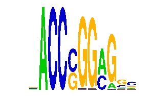

family_1 |
|---|
|  |
| Download PWM |
| Download instances (motifs) |
| Show motif distribution |
Query_ID | Query_Consensus | Subject_Name | Source_DB | Subject_ID | Length | Orientation | Offset | Divergence | Overlap | Subject_Consensus |
|---|
Sequence | Start_position (from start) | Start_position (from end) | Average conservation | Best conservation score | Instance_with_best_CS | Best_Z-score | Instance_with_best_ZS | Strand |
|---|---|---|---|---|---|---|---|---|
| chr16:18247798-18249727 | 734 | 746 | 0.09725 | 0.349 | .ACCCGSAAGC. | 35.708115 | .ACCCGSAAGC. | 1 |
| chr4:129418561-129419912 | 424 | 436 | 0.0104167 | 0.098 | .ACCSGGMG... | 33.97245 | .ACCSGGMG... | 1 |
| chr11:102254044-102255664 | 1204 | 1216 | 0.00708333 | 0.024 | .ACCGGGARSC. | 35.70824 | AACCSKGAGGC. | 1 |
| chr14:55050055-55051695 | 790 | 802 | 0.00166667 | 0.011 | .ACCSGGMG... | 33.97245 | .ACCSGGMG... | -1 |
| chr15:98815625-98816657 | 799 | 811 | 0.0085 | 0.033 | .ACCSGGMG... | 33.97245 | .ACCSGGMG... | 1 |
| chr8:130882847-130884124 | 1052 | 1064 | 0.203 | 0.969 | .ACCSGGMG... | 33.97245 | .ACCSGGMG... | 1 |
| chr11:6191236-6192774 | 515 | 527 | 0.000333333 | 0.001 | .ACCSGGMG... | 33.97245 | .ACCSGGMG... | 1 |
| chrX:71031616-71032634 | 15 | 27 | 0.0344167 | 0.066 | .ACCSGGMG... | 33.97245 | .ACCSGGMG... | 1 |
| chr6:85401256-85402870 | 136 | 148 | 0.168417 | 0.835 | .ACCSGGMG... | 33.97245 | .ACCSGGMG... | 1 |
| chr7:135110644-135111653 | 375 | 387 | 0.110167 | 0.842 | .ACCGSGARGC. | 32.700714 | .ACCGSGARGC. | -1 |
| chr19:36892366-36893434 | 126 | 138 | 0.457 | 0.525 | .ACCSGGMG... | 33.97245 | .ACCSGGMG... | 1 |
| chrX:34335659-34336708 | 319 | 331 | 0.028 | 0.087 | AACCSGGAGG.. | 33.97245 | .ACCSGGMG... | 1 |
| chr3:95798593-95800588 | 1364 | 1376 | 0.02775 | 0.056 | AACCSGGWGGC. | 34.117435 | .ACCSGGARGC. | 1 |
| chr11:53113104-53114274 | 621 | 633 | 0.996917 | 1 | .ACCSGGMG... | 33.97245 | .ACCSGGMG... | 1 |
| chr7:87438507-87440140 | 864 | 876 | 0.0231667 | 0.051 | .ACCSGGMG... | 33.97245 | .ACCSGGMG... | -1 |
| chr8:23703230-23704354 | 722 | 734 | 0.000416667 | 0.002 | .ACCSGGMG... | 33.97245 | .ACCSGGMG... | -1 |
| chr11:51812963-51814050 | 685 | 697 | 0 | 0 | .ACCSGGARGC. | 32.700714 | .ACCGSGARGC. | 1 |
| chr9:108165360-108166482 | 204 | 216 | 0.00208333 | 0.006 | AACCSKGAGGC. | 32.70083 | AACCSGGWGGC. | 1 |
| chr7:139788616-139789642 | 677 | 689 | 0.39975 | 0.867 | .ACCSGGMG... | 33.97245 | .ACCSGGMG... | 1 |
| chr17:47808878-47810250 | 401 | 413 | 0.970083 | 1 | AACCSGGAGG.. | 33.97245 | .ACCSGGMG... | 1 |
| chr17:35272030-35273042 | 966 | 978 | 0.529583 | 0.786 | .ACCCGSAAGC. | 32.700714 | .ACCSGGAAGC. | -1 |
| chr8:42218438-42219769 | 638 | 650 | 0.0439167 | 0.074 | .ACCSGGMG... | 33.97245 | .ACCSGGMG... | 1 |
| chr12:3308809-3310306 | 853 | 865 | 0.999917 | 1 | .ACCSGGMG... | 33.97245 | .ACCSGGMG... | -1 |
| chr6:86475144-86476362 | 1174 | 1186 | 0.00025 | 0.002 | AACCSGGWGGC. | 32.70083 | AACCSGGWGGC. | 1 |
| chr7:30979456-30980498 | 655 | 667 | 0.000916667 | 0.004 | .ACCSGGMG... | 33.97245 | .ACCSGGMG... | -1 |
| chr14:55512770-55514211 | 455 | 467 | 0.99225 | 1 | .ACCSGGMG... | 33.97245 | .ACCSGGMG... | -1 |
| chr15:58764642-58765659 | 696 | 708 | 0.227417 | 0.929 | .ACCCGSAAGC. | 32.700714 | .ACCSGGAAGC. | -1 |
| chr15:76734335-76735547 | 581 | 593 | 0.0005 | 0.003 | .ACCSGGMG... | 33.97245 | .ACCSGGMG... | 1 |
| chr10:126500478-126501540 | 731 | 743 | 0.0245 | 0.049 | .ACCSGGMG... | 33.97245 | .ACCSGGMG... | -1 |
| chr17:35272030-35273042 | 167 | 179 | 0.958167 | 1 | .ACCSGGMG... | 33.97245 | .ACCSGGMG... | -1 |
| chr7:6648552-6649577 | 592 | 604 | 0.01475 | 0.024 | .ACCSGGMG... | 33.97245 | .ACCSGGMG... | 1 |
| chr5:136379288-136380302 | 203 | 215 | 0 | 0 | .ACCCGGARGCM | 35.708115 | .ACCCGSAAGC. | 1 |
| chr12:56499076-56500655 | 601 | 613 | 8.33333e-05 | 0.001 | .ACCCGKAMGC. | 35.708115 | .ACCCGSAAGC. | 1 |
| chr5:122951129-122952168 | 958 | 970 | 0.12175 | 0.425 | .ACCGSGARGC. | 32.700714 | .ACCGSGARGC. | 1 |
| chr8:74659010-74660674 | 1349 | 1361 | 0.00208333 | 0.01 | .ACCSGGMG... | 33.97245 | .ACCSGGMG... | 1 |
| chr2:165979433-165981573 | 985 | 997 | 0.117917 | 0.695 | .ACCSGGMG... | 33.97245 | .ACCSGGMG... | 1 |
| chr15:102155331-102157419 | 1412 | 1424 | 0.00075 | 0.003 | .ACCSGGMG... | 33.97245 | .ACCSGGMG... | -1 |
| chr8:97875814-97877346 | 587 | 599 | 0.994417 | 1 | .ACCSGGMG... | 33.97245 | .ACCSGGMG... | 1 |
| chr17:24563262-24564437 | 779 | 791 | 0.00233333 | 0.004 | .ACCSGGMG... | 33.97245 | .ACCSGGMG... | 1 |
| chr18:4920327-4921375 | 278 | 290 | 0.909667 | 0.945 | .ACCSGGMG... | 33.97245 | .ACCSGGMG... | 1 |
| chr11:52173862-52175611 | 1335 | 1347 | 0.00158333 | 0.005 | .ACCSGGMG... | 33.97245 | .ACCSGGMG... | -1 |
| chr17:21082034-21083055 | 585 | 597 | 0.00075 | 0.002 | .ACCSGGMG... | 33.97245 | .ACCSGGMG... | -1 |
| chr5:143721717-143723039 | 212 | 224 | 0.000333333 | 0.001 | .ACCSGGMG... | 33.97245 | .ACCSGGMG... | 1 |
| chr2:38513539-38514553 | 590 | 602 | 0.99825 | 1 | .ACCSGGMG... | 33.97245 | .ACCSGGMG... | 1 |
| chr14:26196886-26198408 | 402 | 414 | 0.000416667 | 0.001 | .ACCSGGMG... | 33.97245 | .ACCSGGMG... | 1 |
| chr7:150238414-150239451 | 271 | 283 | 0.927667 | 0.975 | .ACCSGGMG... | 33.97245 | .ACCSGGMG... | -1 |
| chr5:73683671-73684688 | 370 | 382 | 0.781667 | 0.968 | .ACCCGSAAGC. | 35.708115 | .ACCCGKAMGC. | -1 |
| chr4:55361912-55363931 | 1373 | 1385 | 0.990583 | 1 | .ACCSGGMG... | 33.97245 | .ACCSGGMG... | 1 |
| chr5:136409584-136410857 | 865 | 877 | 0.743417 | 0.996 | .ACCSGGMG... | 33.97245 | .ACCSGGMG... | 1 |
| chr11:68505858-68506871 | 542 | 554 | 0.0865833 | 0.169 | .ACCSGGMG... | 33.97245 | .ACCSGGMG... | 1 |
| chr14:56290356-56291374 | 397 | 409 | 0.986083 | 1 | .ACCCGSAAGC. | 35.70824 | .ACCCGGARGCM | -1 |
| chr2:90780267-90781631 | 645 | 657 | 0.959 | 0.994 | .ACCSGGMG... | 33.97245 | .ACCSGGMG... | -1 |
| chr11:30097458-30098981 | 228 | 240 | 0.166917 | 0.693 | .ACCCGSAAGC. | 35.708115 | .ACCCGSAAGC. | 1 |
| chr10:77471770-77472828 | 331 | 343 | 0.0216667 | 0.049 | .ACCSGGMG... | 33.97245 | .ACCSGGMG... | 1 |
| chr9:57368890-57369976 | 651 | 663 | 0.565833 | 0.858 | .ACCSGGMG... | 33.97245 | .ACCSGGMG... | 1 |
| chr7:128177787-128178937 | 202 | 214 | 0.00975 | 0.015 | .ACCSGGARGC. | 41.72292 | .ACCGGGARSC. | -1 |
| chr17:28465600-28466631 | 617 | 629 | 0.62825 | 1 | .ACCSGGMG... | 33.97245 | .ACCSGGMG... | -1 |
| chr16:56716832-56717865 | 402 | 414 | 0.00325 | 0.009 | AACCSGGAGG.. | 35.708115 | AACCSGGAGG.. | -1 |
| chr7:135110644-135111653 | 10 | 22 | 0.0223333 | 0.095 | .ACCSGGMG... | 33.97245 | .ACCSGGMG... | 1 |
| chr11:30097458-30098981 | 1146 | 1158 | 0.00141667 | 0.006 | .ACCSGGMG... | 33.97245 | .ACCSGGMG... | 1 |
| chr11:4998052-4999248 | 719 | 731 | 0.00658333 | 0.032 | .ACCGSGARGC. | 32.700714 | .ACCGSGARGC. | 1 |
| chr16:17200503-17201552 | 558 | 570 | 0.00775 | 0.026 | .ACCGSGARGC. | 34.117435 | .ACCSGGARGC. | -1 |
| chr7:26538994-26540637 | 394 | 406 | 0.986333 | 1 | .ACCSGGMG... | 33.97245 | .ACCSGGMG... | -1 |
| chr11:87780949-87782148 | 541 | 553 | 0.02 | 0.028 | .ACCSGGMG... | 33.97245 | .ACCSGGMG... | -1 |
| chr7:29766201-29767230 | 331 | 343 | 0.00325 | 0.018 | .ACCSGGMG... | 33.97245 | .ACCSGGMG... | 1 |
| chr7:29580659-29582552 | 489 | 501 | 0.993417 | 0.997 | .ACCSGGMG... | 33.97245 | .ACCSGGMG... | 1 |
| chr15:79376364-79377378 | 566 | 578 | 0.896167 | 0.982 | .ACCSGGMG... | 33.97245 | .ACCSGGMG... | 1 |
| chr1:155178899-155180297 | 1225 | 1237 | 0.0283333 | 0.105 | .ACCSGGMG... | 33.97245 | .ACCSGGMG... | 1 |
| chr1:120284835-120286661 | 32 | 44 | 0.000333333 | 0.001 | .ACCSGGMG... | 33.97245 | .ACCSGGMG... | 1 |
| chr2:51002464-51004771 | 864 | 876 | 8.33333e-05 | 0.001 | AACCSGGAGGM. | 33.97245 | .ACCSGGMG... | 1 |
| chr11:120094281-120096389 | 1136 | 1148 | 0.000916667 | 0.004 | .ACCSGGMG... | 33.97245 | .ACCSGGMG... | 1 |
| chr1:88400431-88401718 | 147 | 159 | 0.000916667 | 0.002 | .ACCSGGMG... | 33.97245 | .ACCSGGMG... | -1 |
| chr2:26441799-26443028 | 977 | 989 | 0.000333333 | 0.001 | .ACCSGGMG... | 33.97245 | .ACCSGGMG... | -1 |
| chr10:36693977-36695650 | 162 | 174 | 0.0183333 | 0.058 | .ACCCGKAMGC. | 35.708115 | .ACCCGKAMGC. | -1 |
| chr13:73468087-73469296 | 797 | 809 | 0 | 0 | .ACCGSGARGC. | 32.700714 | .ACCGSGARGC. | -1 |
| chr2:151367545-151369341 | 607 | 619 | 0.000416667 | 0.002 | .ACCSGGMG... | 33.97245 | .ACCSGGMG... | 1 |
| chr6:127984353-127985469 | 562 | 574 | 0.553583 | 0.862 | .ACCSGGMG... | 33.97245 | .ACCSGGMG... | 1 |
| chr1:74443760-74444793 | 775 | 787 | 0.001 | 0.003 | .ACCSGGMG... | 33.97245 | .ACCSGGMG... | 1 |
| chr12:70284180-70285811 | 337 | 349 | 0.0095 | 0.026 | .ACCCGKAMGC. | 35.708115 | .ACCCGKAMGC. | -1 |
| chr5:143721717-143723039 | 851 | 863 | 0.999917 | 1 | .ACCCGSAAGC. | 35.708115 | .ACCCGSAAGC. | 1 |
| chr13:64470648-64472545 | 1091 | 1103 | 0.01975 | 0.136 | .ACCSGGMG... | 33.97245 | .ACCSGGMG... | -1 |
| chr1:88338466-88339926 | 565 | 577 | 0.000916667 | 0.005 | .ACCSGGMG... | 33.97245 | .ACCSGGMG... | 1 |
| chr2:143740901-143742108 | 786 | 798 | 0.0323333 | 0.068 | AACCSGGWGGC. | 32.70083 | AACCSGGWGGC. | 1 |
| chr8:90977715-90978870 | 370 | 382 | 0.96275 | 0.985 | .ACCSGGMG... | 33.97245 | .ACCSGGMG... | 1 |
| chr5:143667638-143668700 | 406 | 418 | 0.00458333 | 0.014 | .ACCCGSAAGC. | 35.708115 | .ACCCGSAAGC. | 1 |
| chr4:155204392-155206382 | 1073 | 1085 | 0.00941667 | 0.016 | .ACCSGGARGC. | 33.97245 | .ACCSGGMG... | 1 |
| chr8:97875814-97877346 | 809 | 821 | 0.01125 | 0.035 | .ACCGGGARSC. | 41.72292 | .ACCGGGARSC. | 1 |
| chr4:134023938-134025088 | 768 | 780 | 0.000583333 | 0.003 | .ACCSGGMG... | 33.97245 | .ACCSGGMG... | -1 |
| chrX:50340909-50342437 | 561 | 573 | 0.00416667 | 0.01 | .ACCSGGMG... | 33.97245 | .ACCSGGMG... | -1 |
| chr19:5366609-5367781 | 106 | 118 | 0.341333 | 0.894 | .ACCSGGMG... | 33.97245 | .ACCSGGMG... | 1 |
| chr12:101348031-101349210 | 719 | 731 | 0.0654167 | 0.088 | .ACCSGGMG... | 33.97245 | .ACCSGGMG... | 1 |
| chr15:76734335-76735547 | 1220 | 1232 | 0.00866667 | 0.022 | .ACCCGKAMGC. | 35.708115 | .ACCCGKAMGC. | -1 |
| chr11:50023474-50024490 | 414 | 426 | 0.00116667 | 0.003 | .ACCSGGMG... | 33.97245 | .ACCSGGMG... | 1 |
| chr16:17200503-17201552 | 623 | 635 | 0.23175 | 0.364 | .ACCSGGMG... | 33.97245 | .ACCSGGMG... | 1 |
| chr1:87790747-87792102 | 623 | 635 | 0.1865 | 0.581 | .ACCSGGMG... | 33.97245 | .ACCSGGMG... | -1 |
| chr2:121239319-121240454 | 752 | 764 | 0.000333333 | 0.001 | AACCSKGAGGC. | 41.72292 | .ACCGGGARSC. | 1 |
| chr6:72462266-72463277 | 713 | 725 | 8.33333e-05 | 0.001 | .ACCSGGMG... | 33.97245 | .ACCSGGMG... | 1 |
| chr17:25969254-25970697 | 407 | 419 | 1 | 1 | .ACCSGGMG... | 34.117435 | .ACCSGGARGC. | -1 |
| chr2:179991194-179993003 | 861 | 873 | 0.827083 | 0.999 | .ACCCGSAAGC. | 32.700714 | .ACCSGGAAGC. | 1 |
| chr9:61761497-61763104 | 1243 | 1255 | 0.0460833 | 0.079 | .ACCSGGMG... | 33.97245 | .ACCSGGMG... | 1 |
| chr5:38951834-38953285 | 1105 | 1117 | 1 | 1 | .ACCSGGARGC. | 35.708115 | .ACCCGSAAGC. | 1 |
| chr7:31514226-31515248 | 220 | 232 | 0.98925 | 1 | .ACCSGGMG... | 33.97245 | .ACCSGGMG... | -1 |
| chr11:87799879-87801371 | 640 | 652 | 0.999167 | 1 | .ACCSGGMG... | 33.97245 | .ACCSGGMG... | 1 |
| chr9:43942347-43943517 | 1085 | 1097 | 0.00141667 | 0.005 | AACCSGGAGG.. | 32.70083 | AACCSGGWGGC. | -1 |
| chr9:109833571-109835361 | 411 | 423 | 0.0459167 | 0.111 | .ACCCGKAMGC. | 35.708115 | .ACCCGKAMGC. | 1 |
| chr9:71618751-71619766 | 735 | 747 | 0.00508333 | 0.011 | .ACCSGGMG... | 33.97245 | .ACCSGGMG... | 1 |
| chr7:52688841-52690879 | 862 | 874 | 0.2945 | 0.885 | .ACCGGGARSC. | 33.97245 | .ACCSGGMG... | -1 |
| chr7:29134944-29136735 | 630 | 642 | 0.0249167 | 0.072 | .ACCSGGMG... | 33.97245 | .ACCSGGMG... | -1 |
| chr4:57968162-57969386 | 746 | 758 | 0.00425 | 0.018 | .ACCSGGMG... | 33.97245 | .ACCSGGMG... | 1 |
| chr2:38863262-38864623 | 661 | 673 | 0.00208333 | 0.011 | .ACCSGGMG... | 33.97245 | .ACCSGGMG... | -1 |
| chr12:113916629-113918034 | 307 | 319 | 0.128917 | 0.576 | .ACCSGGMG... | 33.97245 | .ACCSGGMG... | -1 |
| chr9:108207650-108208700 | 641 | 653 | 0.502417 | 0.948 | .ACCSGGMG... | 33.97245 | .ACCSGGMG... | 1 |
| chr2:143740901-143742108 | 406 | 418 | 0.00191667 | 0.011 | .ACCSGGMG... | 33.97245 | .ACCSGGMG... | 1 |
| chr1:132993386-132994438 | 306 | 318 | 0.00025 | 0.002 | .ACCSGGMG... | 33.97245 | .ACCSGGMG... | -1 |
| chr5:143667638-143668700 | 779 | 791 | 0.988667 | 1 | .ACCSGGMG... | 33.97245 | .ACCSGGMG... | -1 |
| chr16:85172938-85174313 | 973 | 985 | 0.205833 | 0.58 | .ACCSGGMG... | 33.97245 | .ACCSGGMG... | -1 |
| chr2:167942445-167943476 | 619 | 631 | 0.00175 | 0.004 | .ACCSGGMG... | 33.97245 | .ACCSGGMG... | 1 |
| chr4:129191151-129192204 | 124 | 136 | 0.989 | 1 | .ACCSGGMG... | 33.97245 | .ACCSGGMG... | -1 |
| chr15:98815625-98816657 | 484 | 496 | 0.00658333 | 0.009 | .ACCCGGARGCM | 34.117435 | .ACCSGGARGC. | -1 |
| chr5:38951834-38953285 | 1325 | 1337 | 0.03025 | 0.059 | .ACCGGGARSC. | 33.97245 | .ACCSGGMG... | 1 |
| chr13:55422501-55424179 | 822 | 834 | 0.2015 | 0.61 | .ACCSGGMG... | 33.97245 | .ACCSGGMG... | -1 |
| chr4:137469179-137470220 | 431 | 443 | 0.111917 | 0.452 | .ACCSGGMG... | 33.97245 | .ACCSGGMG... | -1 |
| chr7:6681563-6683403 | 235 | 247 | 0.00391667 | 0.005 | .ACCSGGMG... | 33.97245 | .ACCSGGMG... | 1 |
| chr5:38951834-38953285 | 1061 | 1073 | 0.991083 | 1 | .ACCCGKAMGC. | 35.708115 | .ACCCGKAMGC. | 1 |
| chr19:4192156-4193199 | 1018 | 1030 | 0.92675 | 1 | .ACCSGGMG... | 33.97245 | .ACCSGGMG... | 1 |
| chr17:47824204-47825791 | 734 | 746 | 0.01475 | 0.058 | .ACCSGGMG... | 33.97245 | .ACCSGGMG... | 1 |
| chr14:22650130-22651647 | 78 | 90 | 0.00825 | 0.024 | AACCSKGAGGC. | 35.70824 | AACCSKGAGGC. | 1 |
| chr12:113916629-113918034 | 1352 | 1364 | 0.191083 | 0.279 | .ACCCGKAMGC. | 35.708115 | .ACCCGKAMGC. | 1 |
| chr5:33361615-33362790 | 17 | 29 | 0.235833 | 0.903 | .ACCGGGARSC. | 32.700714 | .ACCSGGAAGC. | 1 |
| chr16:56716832-56717865 | 369 | 381 | 0.0104167 | 0.025 | .ACCSGGMG... | 33.97245 | .ACCSGGMG... | 1 |
| chr1:74438228-74439489 | 996 | 1008 | 0.00133333 | 0.004 | .ACCSGGMG... | 33.97245 | .ACCSGGMG... | -1 |
| chr10:77888060-77889080 | 111 | 123 | NA | NA | .ACCSGGAAGC. | 35.708115 | .ACCCGSAAGC. | 1 |
| chr19:10969545-10970725 | 346 | 358 | 0.359 | 0.561 | .ACCGGGARSC. | 41.72292 | .ACCGGGARSC. | 1 |
| chr10:60914541-60915715 | 864 | 876 | 0.04175 | 0.148 | .ACCSGGMG... | 33.97245 | .ACCSGGMG... | -1 |
| chr5:31915933-31916958 | 583 | 595 | 0.0836667 | 0.185 | .ACCSGGARGC. | 33.97245 | .ACCSGGMG... | -1 |
| chr7:29134944-29136735 | 1187 | 1199 | 0.05425 | 0.151 | .ACCCGKAMGC. | 35.708115 | .ACCCGKAMGC. | -1 |
| chrX:71494488-71495513 | 593 | 605 | 0.867917 | 0.996 | .ACCSGGMG... | 33.97245 | .ACCSGGMG... | -1 |
| chr14:26278978-26280502 | 56 | 68 | 0.96925 | 0.996 | .ACCSGGMG... | 33.97245 | .ACCSGGMG... | -1 |
| chr11:115885048-115886076 | 500 | 512 | 0.000583333 | 0.003 | .ACCGSGARGC. | 34.117435 | .ACCSGGARGC. | 1 |
| chr9:51856205-51857213 | 522 | 534 | 0.0274167 | 0.052 | .ACCSGGMG... | 33.97245 | .ACCSGGMG... | 1 |
| chr4:135699352-135700751 | 931 | 943 | 0.896917 | 0.995 | .ACCSGGMG... | 33.97245 | .ACCSGGMG... | -1 |
| chr2:179776476-179778050 | 81 | 93 | 0.01 | 0.016 | .ACCCGGARGCM | 35.708115 | .ACCCGSAAGC. | 1 |
| chr7:139767434-139768455 | 452 | 464 | 0.00125 | 0.007 | .ACCSGGMG... | 33.97245 | .ACCSGGMG... | 1 |
| chr11:120433549-120434562 | 831 | 843 | 0.000583333 | 0.002 | .ACCSGGMG... | 34.117435 | .ACCSGGARGC. | 1 |
| chr6:83058875-83059911 | 746 | 758 | 0.06425 | 0.129 | .ACCSGGMG... | 33.97245 | .ACCSGGMG... | 1 |
| chr10:117282418-117283826 | 377 | 389 | 0.0148333 | 0.074 | .ACCSGGMG... | 33.97245 | .ACCSGGMG... | -1 |
| chr9:59503982-59505023 | 581 | 593 | 0.000166667 | 0.001 | .ACCSGGMG... | 33.97245 | .ACCSGGMG... | -1 |
| chr9:108165360-108166482 | 504 | 516 | 0.785083 | 1 | .ACCGSGARGC. | 41.72292 | .ACCGGGARSC. | 1 |
| chr8:42218438-42219769 | 631 | 643 | 0.0126667 | 0.029 | .ACCGGGARSC. | 41.72292 | .ACCGGGARSC. | 1 |
| chr11:115374696-115375726 | 835 | 847 | 0.9945 | 1 | .ACCSGGMG... | 33.97245 | .ACCSGGMG... | 1 |
| chr1:137209492-137210681 | 951 | 963 | 0.00175 | 0.005 | .ACCSGGMG... | 33.97245 | .ACCSGGMG... | 1 |
| chr4:135690367-135691895 | 725 | 737 | 0.995833 | 1 | .ACCSGGMG... | 32.70083 | AACCSGGAGGM. | -1 |
| chr1:153191473-153192799 | 316 | 328 | 0.0215833 | 0.109 | .ACCSGGMG... | 33.97245 | .ACCSGGMG... | -1 |
| chr19:9041498-9042524 | 880 | 892 | 0.0738333 | 0.38 | .ACCSGGMG... | 33.97245 | .ACCSGGMG... | -1 |
| chr11:51912115-51913133 | 683 | 695 | 0.983917 | 1 | .ACCSGGMG... | 33.97245 | .ACCSGGMG... | 1 |
| chr17:35300904-35302750 | 415 | 427 | 0.0025 | 0.01 | .ACCSGGMG... | 41.72292 | .ACCGGGARSC. | 1 |
| chr4:116357864-116359129 | 587 | 599 | 0.00216667 | 0.005 | AACCSKGAGGC. | 35.70824 | AACCSKGAGGC. | 1 |
| chr7:74516602-74518647 | 1681 | 1693 | 0.0273333 | 0.065 | .ACCSGGMG... | 33.97245 | .ACCSGGMG... | 1 |
| chr2:90756968-90758126 | 796 | 808 | 0.865583 | 1 | .ACCSGGMG... | 33.97245 | .ACCSGGMG... | 1 |
| chr11:88017527-88018539 | 452 | 464 | 0.971333 | 1 | .ACCSGGMG... | 33.97245 | .ACCSGGMG... | -1 |
| chr7:52123578-52125877 | 831 | 843 | 0.00558333 | 0.009 | .ACCCGGARGCM | 33.97245 | .ACCSGGMG... | 1 |
| chr5:136254117-136255359 | 396 | 408 | 0.004 | 0.017 | .ACCSGGMG... | 33.97245 | .ACCSGGMG... | 1 |
| chr6:88024512-88025547 | 752 | 764 | 0.866167 | 0.873 | .ACCCGSAAGC. | 35.70824 | .ACCCGGARGCM | -1 |
| chr10:90633360-90634500 | 862 | 874 | 0.000583333 | 0.003 | .ACCSGGMG... | 33.97245 | .ACCSGGMG... | 1 |
| chr4:82149841-82151322 | 565 | 577 | 0.5445 | 0.966 | .ACCSGGMG... | 33.97245 | .ACCSGGMG... | -1 |
| chr7:106631164-106632189 | 499 | 511 | 0.000666667 | 0.002 | .ACCSGGMG... | 33.97245 | .ACCSGGMG... | -1 |
| chr11:50190879-50192128 | 819 | 831 | 0.00575 | 0.02 | .ACCSGGMG... | 33.97245 | .ACCSGGMG... | -1 |
| chr13:29049837-29051301 | 105 | 117 | 0.00075 | 0.003 | .ACCSGGMG... | 33.97245 | .ACCSGGMG... | -1 |
| chr17:69190490-69191518 | 395 | 407 | 0.953417 | 1 | .ACCSGGMG... | 33.97245 | .ACCSGGMG... | 1 |
| chr13:45602592-45603625 | 984 | 996 | 0.00025 | 0.002 | .ACCSGGMG... | 33.97245 | .ACCSGGMG... | 1 |
| chr18:35277848-35279551 | 182 | 194 | 0.00583333 | 0.013 | .ACCSGGMG... | 33.97245 | .ACCSGGMG... | 1 |
| chr8:114534434-114536132 | 1120 | 1132 | 0.997917 | 1 | .ACCSGGMG... | 33.97245 | .ACCSGGMG... | 1 |
| chr3:65195503-65196900 | 620 | 632 | 0.00416667 | 0.014 | .ACCSGGMG... | 33.97245 | .ACCSGGMG... | -1 |
| chr2:158004337-158005603 | 249 | 261 | 0.160417 | 0.276 | AACCSKGAGGC. | 35.70824 | AACCSKGAGGC. | 1 |
| chr2:71710526-71712031 | 572 | 584 | 0.000583333 | 0.001 | .ACCSGGMG... | 33.97245 | .ACCSGGMG... | -1 |
| chr5:116009139-116010658 | 793 | 805 | 0.00283333 | 0.014 | .ACCSGGMG... | 34.117435 | .ACCSGGARGC. | -1 |
| chr4:129177474-129178869 | 261 | 273 | 0.00258333 | 0.006 | .ACCSGGMG... | 33.97245 | .ACCSGGMG... | -1 |
| chr2:26787947-26789315 | 962 | 974 | 0.514667 | 0.989 | .ACCSGGMG... | 33.97245 | .ACCSGGMG... | 1 |
| chr15:75910242-75911711 | 1258 | 1270 | 0.0104167 | 0.023 | .ACCSGGMG... | 33.97245 | .ACCSGGMG... | 1 |
| chr4:118965590-118966915 | 922 | 934 | 0.199833 | 0.878 | .ACCSGGMG... | 33.97245 | .ACCSGGMG... | -1 |
| chr1:88383979-88385017 | 259 | 271 | 0.01225 | 0.031 | .ACCSGGMG... | 33.97245 | .ACCSGGMG... | 1 |
| chr10:13043216-13044390 | 920 | 932 | 0.4215 | 0.931 | .ACCSGGMG... | 33.97245 | .ACCSGGMG... | 1 |
| chr10:112365395-112366435 | 261 | 273 | 0.98275 | 1 | .ACCSGGMG... | 33.97245 | .ACCSGGMG... | -1 |
| chr9:58429262-58431310 | 1276 | 1288 | 0.889417 | 0.992 | .ACCSGGMG... | 33.97245 | .ACCSGGMG... | 1 |
| chr3:95798593-95800588 | 1340 | 1352 | 0.0661667 | 0.17 | .ACCSGGMG... | 33.97245 | .ACCSGGMG... | 1 |
| chr9:48793090-48794111 | 392 | 404 | 0.00491667 | 0.036 | .ACCSGGARGC. | 41.72292 | .ACCGGGARSC. | -1 |
| chr1:88423583-88425608 | 746 | 758 | 0.00125 | 0.004 | .ACCSGGMG... | 33.97245 | .ACCSGGMG... | -1 |
| chr1:95341171-95342192 | 728 | 740 | 0.03525 | 0.333 | .ACCSGGMG... | 33.97245 | .ACCSGGMG... | -1 |
| chr2:155061572-155063126 | 820 | 832 | 0 | 0 | .ACCSGGMG... | 33.97245 | .ACCSGGMG... | 1 |
| chr2:156545920-156547577 | 836 | 848 | 0.999917 | 1 | .ACCCGGARGCM | 32.70083 | AACCSGGWGGC. | 1 |
| chr16:38452468-38453495 | 223 | 235 | 0.00208333 | 0.003 | .ACCSGGMG... | 33.97245 | .ACCSGGMG... | 1 |
| chr4:129554250-129555271 | 816 | 828 | NA | NA | .ACCSGGMG... | 33.97245 | .ACCSGGMG... | -1 |
| chr16:4541197-4542216 | 592 | 604 | 0.000583333 | 0.004 | .ACCSGGMG... | 33.97245 | .ACCSGGMG... | 1 |
| chr19:5366609-5367781 | 45 | 57 | 0.93875 | 1 | .ACCCGSAAGC. | 34.117435 | .ACCSGGARGC. | -1 |
| chr1:88338466-88339926 | 1081 | 1093 | 0.00175 | 0.003 | AACCSGGAGGM. | 32.70083 | AACCSGGWGGC. | -1 |
| chr12:81359636-81361541 | 1263 | 1275 | 0.00191667 | 0.008 | .ACCSGGMG... | 33.97245 | .ACCSGGMG... | 1 |
| chr9:51856205-51857213 | 686 | 698 | 0.0413333 | 0.276 | .ACCGSGARGC. | 32.700714 | .ACCGSGARGC. | 1 |
| chr8:72497295-72498410 | 1070 | 1082 | 0.187833 | 0.324 | .ACCCGSAAGC. | 32.700714 | .ACCSGGAAGC. | 1 |
| chr1:39424741-39425758 | 365 | 377 | 0.0333333 | 0.224 | .ACCSGGMG... | 33.97245 | .ACCSGGMG... | 1 |
| chr18:6240456-6241507 | 632 | 644 | 1 | 1 | .ACCSGGMG... | 33.97245 | .ACCSGGMG... | -1 |
| chr9:120486085-120487095 | 371 | 383 | 0.0425 | 0.06 | .ACCSGGAAGC. | 35.708115 | .ACCCGSAAGC. | -1 |
| chr4:154865497-154866936 | 176 | 188 | 0.455167 | 0.804 | .ACCSGGMG... | 33.97245 | .ACCSGGMG... | 1 |
| chr11:4998052-4999248 | 651 | 663 | 0.130417 | 0.221 | .ACCSGGMG... | 33.97245 | .ACCSGGMG... | 1 |
| chr9:120486085-120487095 | 429 | 441 | 0.0223333 | 0.054 | .ACCSGGMG... | 33.97245 | .ACCSGGMG... | -1 |
| chr3:94690015-94691045 | 708 | 720 | 0.0270833 | 0.068 | .ACCSGGMG... | 33.97245 | .ACCSGGMG... | -1 |
| chr7:134396994-134398001 | 355 | 367 | 0.96425 | 1 | .ACCSGGMG... | 33.97245 | .ACCSGGMG... | 1 |
| chr19:36810515-36811844 | 649 | 661 | 0.0045 | 0.024 | AACCSKGAGGC. | 41.72292 | .ACCGGGARSC. | 1 |
| chr16:90143420-90144856 | 376 | 388 | 0.97675 | 1 | .ACCSGGMG... | 41.72292 | .ACCGGGARSC. | 1 |
| chr11:74536649-74538624 | 1092 | 1104 | 0.545167 | 0.975 | .ACCSGGMG... | 33.97245 | .ACCSGGMG... | -1 |
| chr10:120333818-120336492 | 2006 | 2018 | 0.23925 | 0.32 | .ACCSGGMG... | 33.97245 | .ACCSGGMG... | -1 |
| chr2:156021702-156023101 | 648 | 660 | 0.0741667 | 0.184 | .ACCSGGMG... | 33.97245 | .ACCSGGMG... | 1 |
| chr4:150283191-150284332 | 574 | 586 | 0.00475 | 0.016 | .ACCSGGMG... | 35.708115 | AACCSGGAGG.. | 1 |
| chr19:7280128-7281146 | 647 | 659 | 0.84325 | 0.993 | .ACCCGSAAGC. | 34.117435 | .ACCSGGARGC. | -1 |
| chr7:134168485-134170278 | 330 | 342 | 1 | 1 | .ACCSGGMG... | 33.97245 | .ACCSGGMG... | 1 |
| chr6:115757765-115758795 | 890 | 902 | 0.000416667 | 0.003 | .ACCSGGMG... | 33.97245 | .ACCSGGMG... | 1 |
| chr3:101407393-101409359 | 606 | 618 | 0.00625 | 0.016 | .ACCSGGMG... | 34.117435 | .ACCSGGARGC. | 1 |
| chr8:72497295-72498410 | 169 | 181 | 0.0144167 | 0.034 | .ACCSGGMG... | 35.70824 | .ACCCGGARGCM | 1 |
| chr5:93521550-93523939 | 476 | 488 | 0.0113333 | 0.05 | .ACCSGGMG... | 33.97245 | .ACCSGGMG... | -1 |
| chr5:73683671-73684688 | 667 | 679 | 0.002 | 0.004 | .ACCSGGMG... | 33.97245 | .ACCSGGMG... | 1 |
| chr10:77888060-77889080 | 588 | 600 | 0.0241667 | 0.056 | .ACCSGGMG... | 33.97245 | .ACCSGGMG... | 1 |
| chr15:76729665-76730991 | 601 | 613 | 0.0005 | 0.002 | .ACCSGGMG... | 33.97245 | .ACCSGGMG... | 1 |
| chr9:48793090-48794111 | 990 | 1002 | 0.0105 | 0.055 | .ACCSGGMG... | 33.97245 | .ACCSGGMG... | 1 |
| chr15:36645182-36646671 | 710 | 722 | 0.00808333 | 0.027 | AACCSGGAGG.. | 33.97245 | .ACCSGGMG... | 1 |
| chr11:115274383-115275431 | 432 | 444 | 0.02 | 0.027 | .ACCSGGMG... | 33.97245 | .ACCSGGMG... | 1 |
| chr17:71339244-71340270 | 737 | 749 | 8.33333e-05 | 0.001 | .ACCSGGMG... | 33.97245 | .ACCSGGMG... | 1 |
| chr7:13619343-13620381 | 666 | 678 | 0.902667 | 1 | .ACCCGSAAGC. | 32.700714 | .ACCSGGAAGC. | -1 |
| chr4:55361912-55363931 | 984 | 996 | 0.295083 | 0.696 | AACCSGGAGGM. | 35.708115 | AACCSGGAGG.. | -1 |
| chr11:120441757-120443354 | 710 | 722 | 0.00266667 | 0.011 | AACCSKGAGGC. | 32.70083 | AACCSGGWGGC. | 1 |
| chr12:25779625-25781087 | 858 | 870 | 0.00108333 | 0.009 | .ACCSGGMG... | 33.97245 | .ACCSGGMG... | 1 |